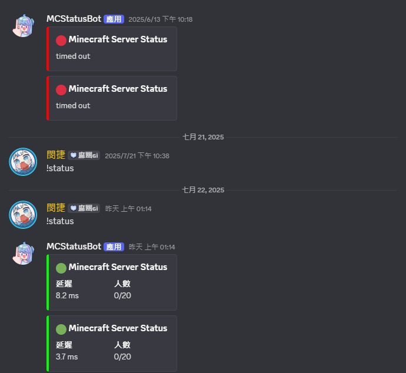

謝文捷 | Hsieh Wen Chieh
專案:利用 Discord Bot 監控 Minecraft 伺服器狀態
專案簡介
為了更方便監控自架的 Minecraft 伺服器狀態，我設計了一個 Discord Bot，能夠定時自動回報伺服器的延遲與在線人數。這個機器人部署於 Ubuntu Server 虛擬機器中，與 Discord 頻道串接，實現伺服器即時狀態通知，並支援指令查詢，提升了管理效率與資訊透明度。
功能說明
• !status 指令：手動查詢伺服器狀態
• 自動通知：每 5 分鐘推播伺服器在線人數與延遲至指定頻道
• 錯誤處理：若伺服器關閉或無法查詢，會回傳錯誤通知
技術細節
• 主要套件：
• discord.py：與 Discord API 溝通
• mcstatus：查詢 Minecraft Java 伺服器狀態
• apscheduler：定時任務排程
• 執行架構：
• 透過 systemd 服務常駐啟動
• Discord bot 實例與事件循環由 asyncio 管理
• 定時任務自動查詢伺服器並回報訊息至 Discord 頻道
實際運作畫面
"在伺服器無作動時顯示紅色，反之則為綠色，可使用!status呼叫機器人"
原始碼與部署教學
Githubbot.py
import os
import asyncio
import discord
from discord.ext import commands
from dotenv import load_dotenv
from mcstatus import JavaServer
from apscheduler.schedulers.asyncio import AsyncIOScheduler
load_dotenv()
DISCORD_TOKEN = os.getenv("DISCORD_TOKEN")
CHANNEL_ID = os.getenv("CHANNEL_ID")
MC_ADDRESS = os.getenv("MC_ADDRESS")
if not all([DISCORD_TOKEN, CHANNEL_ID, MC_ADDRESS]):
print("⚠️ 請確認 .env 檔案的 DISCORD_TOKEN、CHANNEL_ID、MC_ADDRESS 都有正確設定！")
exit(1)
intents = discord.Intents.default()
intents.message_content = True
bot = commands.Bot(command_prefix="!", intents=intents)
async def send_status():
channel = bot.get_channel(int(CHANNEL_ID))
if not channel:
print(f"⚠️ 找不到頻道 ID {CHANNEL_ID}")
return
try:
server = JavaServer.lookup(MC_ADDRESS)
status = await asyncio.get_event_loop().run_in_executor(None, server.status)
embed = discord.Embed(title="🟢 Minecraft Server Status", color=0x00ff00)
embed.add_field(name="延遲", value=f"{status.latency:.1f} ms", inline=True)
embed.add_field(name="人數", value=f"{status.players.online}/{status.players.max}", inline=True)
except Exception as e:
embed = discord.Embed(title="🔴 Minecraft Server Status", description=str(e), color=0xff0000)
await channel.send(embed=embed)
@bot.event
async def on_ready():
print(f"✅ Discord Bot 啟動成功！登入帳號：{bot.user}")
scheduler = AsyncIOScheduler()
scheduler.add_job(send_status, "interval", minutes=5)
scheduler.start()
@bot.command(name="status")
async def manual_status(ctx):
try:
server = JavaServer.lookup(MC_ADDRESS)
status = server.status()
embed = discord.Embed(title="🟢 Minecraft Server Status", color=0x00ff00)
embed.add_field(name="延遲", value=f"{status.latency:.1f} ms", inline=True)
embed.add_field(name="人數", value=f"{status.players.online}/{status.players.max}", inline=True)
except Exception as e:
embed = discord.Embed(title="🔴 Minecraft Server Status", description=str(e), color=0xff0000)
await ctx.send(embed=embed)
if __name__ == "__main__":
bot.run(DISCORD_TOKEN)
mcstatusbot.service
[Unit]
Description=Minecraft Server Status Discord Bot
After=network.target
[Service]
Type=simple
User=root
WorkingDirectory=/root/mc-status-bot
ExecStart=/root/mc-status-bot/venv/bin/python /root/mc-status-bot/bot.py
Restart=always
RestartSec=10
[Install]
WantedBy=multi-user.target
env.env
DISCORD_TOKEN=(你的機器人TOKEN)
CHANNEL_ID=(想發文的頻道ID)
MC_ADDRESS=(你想監控的IP)
心得
這個專案讓我更深入掌握了 Python 與 Discord Bot 的實作流程，並學習如何在 Linux 環境中部署常駐服務。也實際運用 mcstatus 與 apscheduler 實現 Minecraft 狀態查詢與自動推播。 在過程中我也遇到了一些挑戰，例如 .env 的讀取問題、systemd 服務未自動啟動、Bot 無法連線的排查等，但也因此學會了更多關於 Linux 管理與 Debug 的技巧。